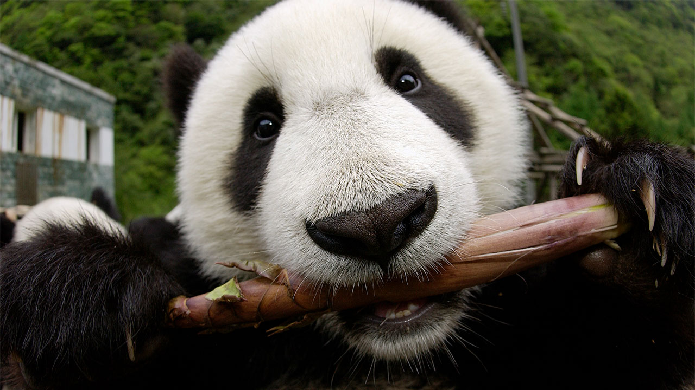

Bamboo Eaters

Source: Katherine Feng/Minden Pictures
Pandas have a specialized diet consisting almost entirely of bamboo. According to the World Wildlife Fund, they consume large quantities of bamboo each day, with adults eating up to 20 to 40 pounds (9 to 18 kilograms) of bamboo shoots, leaves, and stems. Despite being classified as carnivores, pandas have a digestive system more similar to that of herbivores, as they lack the necessary enzymes to efficiently digest meat.